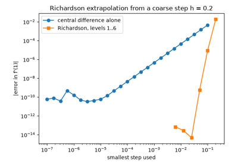
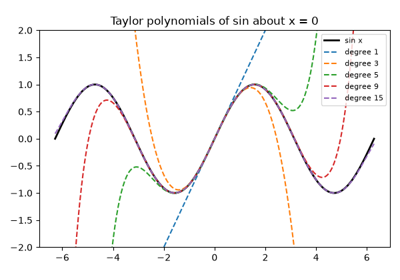
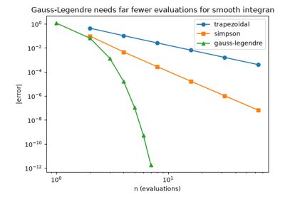

Breakthroughs in Numerical Calculus#
“Nature laughs at the difficulties of integration.” – attributed to Pierre-Simon Laplace
The differential and integral calculus is the oldest subject in this
package by a wide margin, yet its numerical cousin – how to
differentiate or integrate a function you can only sample, or
differentiate a computer program directly – is a comparatively young,
20th-century development. This chronology traces the ideas behind
mathematicskit.calculus, from Newton and Leibniz’s original invention to
the reverse-mode automatic differentiation that now trains every large
neural network.
1665 – 1675 – Newton and Leibniz Invent the Calculus#
Isaac Newton (privately, from about 1665) and Gottfried Wilhelm Leibniz (independently, publishing first, in 1684) each developed a complete differential and integral calculus, touching off one of the bitterest priority disputes in the history of mathematics. Leibniz’s notation – \(dy/dx\), \(\int\) – is the one still in universal use; Newton’s fluxion notation is largely forgotten outside of his own collected works. Both agree on the two central facts every numerical scheme in this module ultimately approximates: the derivative as a limiting difference quotient, and the definite integral as a limiting sum.
Implementation: mathematicskit.calculus.systems.finite_differences.central_difference()
approximates exactly Newton and Leibniz’s limiting difference quotient
at finite step size; mathematicskit.calculus.systems.quadrature.TrapezoidalRule
approximates the limiting Riemann sum.

Richardson extrapolation dramatically improves accuracy
1715 – Taylor’s Theorem#
Brook Taylor’s 1715 Methodus Incrementorum Directa et Inversa gave the general expansion of a function as an infinite power series in its derivatives at a point – with Colin Maclaurin’s 1742 textbook popularizing the special case expanded about zero so thoroughly that it now carries his name instead. Taylor’s theorem is the single fact underlying essentially every numerical approximation scheme in this package: every finite-difference formula’s error term, every quadrature rule’s convergence rate, and every root-finder’s convergence order is a Taylor-series argument in disguise.
Implementation: mathematicskit.calculus.systems.taylor_series.maclaurin_coefficients()
and taylor_remainder_bound()
implement exactly the series and its Lagrange remainder bound.
References: B. Taylor, Methodus Incrementorum Directa et Inversa (London, 1715).

Maclaurin series and their radius of convergence
1927 – Richardson Extrapolation#
Lewis Fry Richardson – better known for his pioneering (and, in his own lifetime, computationally hopeless) attempt at numerical weather prediction – showed in 1911 and 1927 how to combine two estimates of the same quantity at two different step sizes to cancel their leading-order error term, producing a strictly more accurate estimate from the same two computations. Applied to a central-difference derivative or (as Romberg integration) to the trapezoidal rule, Richardson extrapolation is the standard way to buy an extra order or two of accuracy essentially for free.
Implementation: mathematicskit.calculus.systems.finite_differences.richardson_extrapolation()
implements exactly this repeated-halving, error-cancelling extrapolation
as a triangular (Neville-style) table.
References: L. F. Richardson, “The Deferred Approach to the Limit,” Philosophical Transactions of the Royal Society A 226 (1927), 299-361.
Richardson extrapolation dramatically improves accuracy
1814 – 1826 – Gauss and Gaussian Quadrature#
Carl Friedrich Gauss’s 1814 paper asked a question nobody had posed so sharply before: given the freedom to choose both the sample points and their weights (not just the weights, as in Newton-Cotes rules), how accurate can an \(n\)-point quadrature rule be made? Gauss’s answer – placing nodes at the roots of the degree-\(n\) Legendre polynomial – integrates every polynomial up to degree \(2n-1\) exactly, twice the degree a naive equally-spaced rule with the same number of points achieves.
Implementation: mathematicskit.calculus.systems.quadrature.GaussianQuadrature
wraps scipy.integrate.fixed_quad(), and
legendre_nodes_and_weights()
wraps numpy.polynomial.legendre.leggauss() for the underlying
node/weight computation.
References: C. F. Gauss, “Methodus Nova Integralium Valores per Approximationem Inveniendi,” Commentationes Societatis Regiae Scientiarum Gottingensis Recentiores 3 (1814).

Quadrature rules compared: cost vs. accuracy
1964 – QUADPACK and Adaptive Quadrature#
Rather than fix the number of subdivisions in advance, adaptive quadrature routines subdivide where the integrand needs it: estimate an interval’s integral two ways, and if they disagree by more than a tolerance, split the interval and recurse. Robert Piessens, Elise de Doncker-Kapenga, Christoph Uberhuber, and David Kahaner’s QUADPACK library (published as a book in 1983, though developed through the 1970s) gave this idea its definitive, extensively validated implementation, still shipped essentially unchanged inside SciPy today.
Implementation: mathematicskit.calculus.systems.quadrature.AdaptiveQuadrature
wraps scipy.integrate.quad(), which is QUADPACK’s QAGS routine
under the hood.
References: R. Piessens, E. de Doncker-Kapenga, C. W. Uberhuber, and D. K. Kahaner, QUADPACK: A Subroutine Package for Automatic Integration (Berlin: Springer, 1983).
Quadrature rules compared: cost vs. accuracy
1960 – 1970 – Wengert, Linnainmaa, and Automatic Differentiation#
Robert Wengert’s 1964 paper described forward-mode automatic differentiation: augment every arithmetic operation with its derivative, propagated alongside the value itself via the chain rule – exactly what a “dual number” \(a + b\varepsilon\), \(\varepsilon^2=0\) computes automatically when ordinary arithmetic is performed on it. Seppo Linnainmaa’s 1970 thesis described the complementary reverse mode – propagate derivatives backward through a computational graph after a forward pass – which computes a gradient with respect to arbitrarily many inputs at a cost comparable to a single forward evaluation, independent of the input dimension. Reverse-mode automatic differentiation, rediscovered and renamed “backpropagation” in the neural-network literature of the 1980s, is the algorithm that makes training a modern large neural network computationally feasible at all.
Implementation: mathematicskit.calculus.systems.dual_numbers.Dual
implements forward-mode automatic differentiation exactly via dual-number
arithmetic; Variable and
gradient() implement
reverse-mode automatic differentiation over a small computational graph.
References: R. E. Wengert, “A Simple Automatic Derivative Evaluation Program,” Communications of the ACM 7(8) (1964), 463-464; S. Linnainmaa, “The Representation of the Cumulative Rounding Error of an Algorithm as a Taylor Expansion of the Local Rounding Errors” (Master’s thesis, University of Helsinki, 1970).
Forward-mode automatic differentiation via dual numbers

Reverse-mode automatic differentiation for multivariable gradients